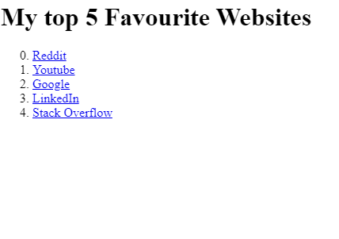
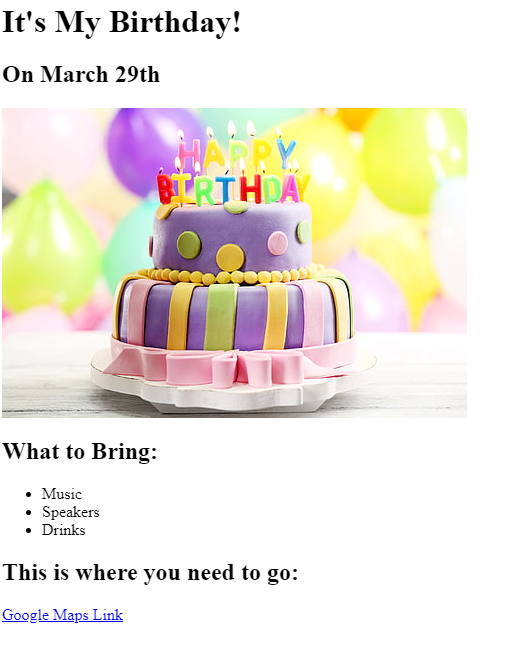

Mr. Lonely Portfolio
I am an artist, striving to inspire the world towards something greater.
Top Websites
These are my most visited websites recently
Check them out yourself!

Birthday Project
My Birthday is coming
Come check it out - project x style
